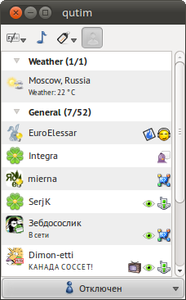
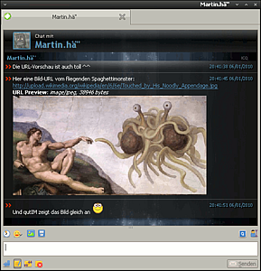
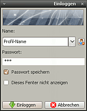
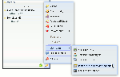
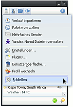
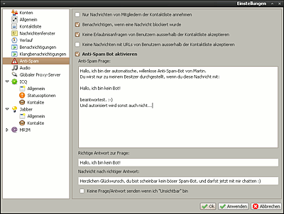

qutIM
Dieser Artikel wurde für die folgenden Ubuntu-Versionen getestet:
Dieser Artikel ist mit keiner aktuell unterstützten Ubuntu-Version getestet! Bitte diesen Artikel testen und das getestet-Tag entsprechend anpassen.
Zum Verständnis dieses Artikels sind folgende Seiten hilfreich:
 qutIM
qutIM  ist ein freier Open-Source Instant Messenger aus Russland, der verschiedene Protokolle unterstützt. Der Client wird seit Anfang 2008 entwickelt und ist in C++ mit Qt4 programmiert, daher gibt es auch Versionen für Windows und Mac OS X. qutIM ist inzwischen sehr modular aufgebaut, und über Plugins beliebig erweiterbar. Für die einfache Installation der Plugins und Themes ist eine kleine Paketverwaltung integriert.
ist ein freier Open-Source Instant Messenger aus Russland, der verschiedene Protokolle unterstützt. Der Client wird seit Anfang 2008 entwickelt und ist in C++ mit Qt4 programmiert, daher gibt es auch Versionen für Windows und Mac OS X. qutIM ist inzwischen sehr modular aufgebaut, und über Plugins beliebig erweiterbar. Für die einfache Installation der Plugins und Themes ist eine kleine Paketverwaltung integriert.
Mittels Plugins lassen sich zum Beispiel Nachrichten an mehrere Benutzer auf einmal versenden (auch kontenübergreifend) oder Bilder direkt im Nachrichtenfenster anzeigen, wenn man die URL einer Bilddatei geschickt bekommt. Es gibt auch Plugins, die das aktuelle Wetter in der Kontaktliste anzeigen oder Internet-Radio abspielen. Viele davon werden allerdings noch entwickelt und müssen selbst kompiliert werden.
|  |  |
| Hauptfenster | Chatfenster |
qutIM lässt sich optisch sehr umfangreich an den persönlichen Geschmack anpassen. Es sind eigene Designs möglich für:
die Kontaktliste
den Rahmen der Kontaktliste
das Chatfenster
den Nachrichtenverlauf im Chatfenster (kompatibel zum Adium-Messenger
)das gesamte Erscheinungsbild (Schaltflächen, Scrollbalken, etc.)
Emoticons
Popup-Fenster bei eingehenden Nachrichten
Klangbenachrichtigungen
Statusicons der Protokolle (kompatibel zum Adium-Messenger)
Systemicons für das gesamte Programm
Diese unterschiedlichen Designs lassen alle im Hauptmenü (links oben) unter "Benutzeroberfläche" auswählen. Alternativ ist es natürlich auch möglich, Fensterrahmen und -hintergund des Systems zu verwenden (dafür sind die entsprechenden Punkte auf "System" umzustellen).
Installation¶
Seit Ubuntu 10.04 ist qutIM in den Paketquellen enthalten, und kann über folgendes Paket installiert [1] werden:
qutim
 mit apturl
mit apturl
Paketliste zum Kopieren:
sudo apt-get install qutim
sudo aptitude install qutim
Hinweis:
Wenn man ICQ benutzt, sollte man unter "Einstellungen -> ICQ -> Allgemein -> Erweitert" die richtige Codepage einstellen, damit man keine Probleme mit Umlauten hat. Funktionieren sollten z.B. ISO 8859-15 oder Windows 1250.
Nach Abschluss der Installation kann man qutIM aus dem Menü unter
"Anwendungen -> Internet -> qutIM"
starten, oder im Terminal[2] über den Befehl qutim.
Plugins¶
Es stehen noch weitere Erweiterungen in den Quellen zur Verfügung:
qutim-plugin-floaties(-dbg) - Ermöglicht einzelne Kontakte "schwimmend" anzuzeigen, d.h. als kleines Symbol immer im Vordergrund
qutim-plugin-histman(-dbg) - Importiert den Nachrichtenverlauf aus anderen Messengern
qutim-plugin-libnotify(-dbg) - Das Ubuntu-Benachrichtigungssystem verwenden
qutim-plugin-nowlistening(-dbg) - Zeigt in den eigenen Statusnachrichten an, welche Musik man gerade hört. (Funktioniert z.B. mit Amarok, VLC, Rhythmbox, Song Bird, MPD, QMMP,...)
qutim-plugin-plugman(-dbg) - Eine Paketverwaltung für qutIM. Für die einfache Installation von Plugins, Designs, Iconsätzen, etc.
Desweiteren gibt es Plugins, um qutIM besser in KDE zu integrieren. Diese sollte man also nur installieren, wenn man auch eine KDE-Umgebung nutzt:
qutim-plugin-kde-integration - Ein Metapaket das alle KDE-Plugins installiert:
qutim-plugin-kdecrash
qutim-plugin-kdeemoticons - KDE Emoticons
qutim-plugin-kdenotifications - Nutzt das KDE-Benachrichtigungssystem für Benachrichtigungen
qutim-plugin-kdephonon - Integration in das KDE-Audiosystem
qutim-plugin-kdespeller - KDE-Rechtschreibprüfung
Plugins aus dem Quelltext kompilieren¶
Da viele Plugins nur als Quelltext vorliegen, ist es notwendig, sie erst zu kompilieren, wenn man sie ausprobieren will. Die Vorgehensweise für "normale Plugins" (keine Protokoll-Plugins) ist wie folgt:
Zunächst sind folgende Pakete für das manuelle kompilieren erforderlich:
qt4-qmake
qt4-dev-tools
build-essential
und für das Laden von Quelltext:
subversion
Als nächstes benötigt man den Quelltext vom qutIM-Kern, herunterzuladen z.B. mit dem Befehl apt-get source qutim
Im dabei entstandenen Ordner qutim-0.2-release.440 (oder ähnlich) wechselt man ins Unterverzeichnis plugins. Hier muss nun der Quelltext des gewünschten Plugins in einen Unterordner kopiert werden. In diesem führt man dann die Befehle qmake -config und make aus. Wenn keine Fehler aufgetreten sind, liegt nun in diesem Ordner eine *.so-Datei, die man nach ~/.config/qutim/plugins kopieren kann (der Unterordner plugins ist ggf. erst noch anzulegen).
Plugins, die nicht als .zip-Datei vorliegen, sondern in svn-Repositories, lassen sich mit svn co <URL> herunterladen.
Hier ein Beispiel für das Plugin "URL-Preview":
apt-get source qutim cd qutim-0.2-release.440/plugins svn co https://boiler.co.ru/svn/qutim-urlpreview/ cd qutim-urlpreview qmake -config make mkdir ~/.config/qutim/plugins cp liburlpreview.so ~/.config/qutim/plugins
Danach muss man qutIM neu starten. Einstellungen von Plugins lassen sich im Hauptmenü unter "Plugins" anpassen.
qutIM 0.3 Beta-Version¶
Wer bereits die kommende Version von qutIM testen möchte, kann diese aus dem PPA der Entwickler installieren. qutIM 0.3 wurde im Kern komplett neu geschrieben und bietet ein erheblich flexibleres Plugin-System.
Adresszeile zum Hinzufügen des PPAs:
ppa:qutim/qutim
Hinweis!
Zusätzliche Fremdquellen können das System gefährden.
Ein PPA unterstützt nicht zwangsläufig alle Ubuntu-Versionen. Weitere Informationen sind der  PPA-Beschreibung des Eigentümers/Teams qutim zu entnehmen.
PPA-Beschreibung des Eigentümers/Teams qutim zu entnehmen.
Damit Pakete aus dem PPA genutzt werden können, müssen die Paketquellen neu eingelesen werden.
Bedienung¶
 Beim ersten Start von qutIM muss man zunächst ein lokales Benutzerprofil erstellen. Hierzu gibt man einfach einen Benutzernamen und ein Passwort ein. Es ist auch möglich, mehrere Profile mit unterschiedlichen Einstellungen/Chat-Konten zu erstellen.
Wenn ein neues Profil angelegt worden ist, wird automatisch der Assistent zum Hinzufügen/Erstellen eines neuen Chat-Kontos ausgeführt. Nach Abschluss des Assistenten ist das jeweilige Konto mit den Grundeinstellungen eingerichtet. Erweiterte Einstellungen, z.B. zur Verbindung, Ports usw. kann man nachträglich unter "Einstellungen -> Konten" verändern.
 Wenn man alles richtig eingegeben hat, verbindet sich qutIM nun automatisch mit den Konten, und die Kontaktliste füllt sich.
Die Symbole für die einzelnen Protokolle findet man an deren unterem Rand. Wenn man sie anklickt, öffnet sich je nach Protokoll ein anderes Menü, in dem sich z.B. der Status wählen lässt, nach Benutzern gesucht werden kann, oder die eigenen Angaben im Benutzerprofil eingestellt werden können.
Wenn man einen Status auswählt, wird man nach der Statusnachricht gefragt, die damit gesetzt werden soll und hat die Möglichkeit, diese als Vorlage zu speichern. "Diesen Dialog nicht mehr anzeigen" wählt man, wenn man nicht will, dass sich das Fenster bei jedem Statuswechsel öffnet. Dann nimmt qutIM bei jedem Status die dort zuletzt verwendete Statusnachricht (Einstellung ist für jeden Status einzeln erforderlich!).
Wenn man die Statusnachricht wieder ändern will, wählt man einfach den Status, der gerade aktiv ist, noch einmal aus und es öffnet sich wieder das bekannte Fenster "Statusnachricht eingeben".
 In der Menüleiste oben findet man das Hauptmenü, sowie drei Schalter, mit denen man die Offline-Kontakte, Gruppen und Töne ein-/ausschalten kann.
Im oberen Teil des Hauptmenüs sind installierte Plugins aufgelistet, die sich ausführen lassen oder weitere Programmfenster öffnen; der untere Teil ist für qutIM allgemein. Unter "Einstellungen" lassen sich die grundsätzlichen Programmeinstellungen/Funktionen konfigurieren, unter "Benutzeroberfläche" lassen sich die verschiedenen Designs, Smileys, etc. auswählen.
 Die Einstellungen sind baumartig für die verschiedenen Programmbereiche angeordnet, und größtenteils selbsterklärend.
Protokollspezifische Einstellungen, die mit der Verbindung zusammenhängen, findet man unter "Konten", allgemeine Einstellungen, wie z.B. Statusoptionen im Baum, unter der Protokollbezeichnung.
Einige Dinge die man wissen sollte:
Für die Konten lässt sich entweder ein globaler Proxyserver einstellen (im Baum), oder für für jedes Protokoll ein anderer (in den jeweiligen Konto-Einstellungen)
Unter "Kontaktliste -> Fensterrahmen" muss "Rahmen des Themas" eingestellt sein, damit ein eingestelltes Fensterrahmen-Design unter "Benutzeroberfläche" wirksam ist
Unter "Nachrichtenfenster -> Chat" muss der WebKit-Modus für den Nachrichtenverlauf aktiviert sein, damit ein eingestelltes WebKit-Design unter "Benutzeroberfläche" wirksam ist. (Der "Nicht-WebKit-Modus" ist einfach ein Standard-Textmodus)
Die Einstellungen im Chat-Fenster ("Nachrichten mit Enter senden" und "Tippbenachrichtigungen") sind nur temporär. Die gleichen Einstellungen findet man auch unter "Einstellungen -> Nachrichtenfenster", diese sind bei jedem Start von qutIM aktiv.
Ordnerübersicht für die Designs¶
Alle persönlichen Einstellungen von qutIM liegen im Ordner ~/.config/qutim/. Besonders die unterschiedlichen Designs muss man dort in die richtigen Unterordner kopieren, damit man sie unter "Benutzeroberfläche" auswählen kann. Falls die Unterordner nicht vorhanden sind, muss man sie erst erstellen. Im Einzelnen sind dies:
qutim.<profilname> - Speicherort der Daten des jeweiligen Profils (Nachrichtenverlauf, Einstellungen, etc.)
borders - Rahmen der Kontaktliste
clstyles - Aussehen der Kontaktliste
chatstyle - Aussehen des Chatfensters (Position/Größe der Schaltflächen, etc.)
webkitstyle - WebKit-Styles für den Nachrichtenverlauf im Chatfenster
emoticons - Smileys in den Nachrichten
languages - Sprachen
plugins - Plugins (Hier gibt es keine Unterordner! Die .so-Dateien direkt hineinkopieren)
statusicons - Iconsätze für die Status
systemicons - Iconsätze für das gesamte Programm
styles - Aussehen der Schaltflächen, Scrollbalken, Auswahlknöpfe, ...
traythemes - Pop-Up-Fenster (z.B. bei Nachrichteneingang, Benutzer gehen Online/Offline, ...)
sounds - Design für Klangereignisse
In diesen Ordnern hat jedes Thema nochmal einen Unterordner, der schließlich die Daten enthält. Will man Designs für alle Benutzer der Systems verfügbar machen, kann man diese auch mit Root-Rechten[3] nach ~/usr/share/qutim/ kopieren.

- Erstellt mit Inyoka
-
 2004 – 2017 ubuntuusers.de • Einige Rechte vorbehalten
2004 – 2017 ubuntuusers.de • Einige Rechte vorbehalten
Lizenz • Kontakt • Datenschutz • Impressum • Serverstatus -
Serverhousing gespendet von